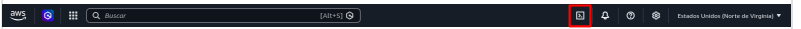

Actividad 04 Creación de MV con CloudShell
Ahora que ya hemos practicado con el entorno gráfico, vamos a comenzar a utilizar la terminal. Para ello, tenemos dos opciones:
- Utilizar aws CLI cuya instalación está explicada en el tema 1 de este curso. Debemos configurar las credenciales en el archivo
credentialspara poder estar conectados con el lab. - Utilizar CloudShell
La diferencia clave entre ambos entornos es dónde se ejecuta y quién gestiona el entorno.
| Aspecto | AWS CLI | CloudShell |
|---|---|---|
| Dónde corre | En tu PC/servidor | En el navegador, dentro de AWS |
| Instalación | Debes instalar y configurar | No se instala nada |
| Credenciales | Las gestionas tú (profiles, keys) | Ya vienen autenticadas con tu sesión |
| Persistencia | Depende de tu equipo | Mantiene un home persistente en AWS |
| Acceso | Desde cualquier terminal tuya | Solo desde la consola web de AWS |
| Uso típico | Automatización, scripts locales, CI/CD | Pruebas rápidas, administración puntual |
Resumen
AWS CLI es tu herramienta local y permanente; CloudShell es una terminal basada en linux lista para usar dentro de AWS sin configurar nada.
En esta práctica vamos a hacer un script utilizando CloudShell para crear una máquina virtual con los valores por defecto mediante el siguiente comando:
aws ec2 run-instances
Nota
Necesitamos especificar algunos parámetros mínimos, entre ellos el identificador de la AMI a utilizar. Existen herramientas y comandos para conocer las IDs de las AMIs, pero nosoros accederemos a la consola gráfica y, al intentar crear una instancia, veremos la ID de la AMI que nos interesa para poder introducirla en el comando.
Recuerda que como usuario de aws academy debes utilizar la región us-east-1 que te permite crear los recursos que se piden en este curso.
PASOS
- Entra en la consola de AWS y abre CloudShell haciendo clic en el icono marcado:

-
Espera a que cargue la terminal. Ahora puedes escribir comandos Linux o aws ... directamente (ya estás autenticado).
-
Crea un archivo con nano. Los archivos de tu carpeta
homequedarán guardados para la próxima sesión. Crearemos un fichero de script (por ejemploCreaEC2.sh) con el siguiente comando especificando algunos parámetros mínimos:
aws ec2 run-instances \
--tag-specifications 'ResourceType=instance,Tags=[{Key=Name,Value=xxxxxxxxxxxx}]' \
--image-id ami-xxxxxxxxxxxxx \
--count 1 \
--instance-type m1.small \
--key-name vockey \
--region us-east-1 \
--security-group-ids sg-xxxxxxxxxxxx \
Especificación de parámetros
- Necesitamos especificar algunos parámetros mínimos:
- sustituye las xxxxxxxxxx de Key=Name por el nombre de tu máquina.
- Existen herramientas y comandos para conocer las IDs de las AMIs, pero nosoros accederemos a la consola gráfica y, al intentar crear una instancia, veremos la ID de la AMI que nos interesa para poder introducirla en el comando.
- Sustituye ami-xxxxxxxxxxxx por el código de aquella AMI que quieras utilizar. Revisa el catálogo de AMIs.
- Recuerda que como usuario de aws academy debes utilizar la región us-east-1 que te permite crear los recursos que se piden en este curso.
- Por último también queremos poder conectar por SSH. Para ello utilizaremos el grupo de seguridad que creamos en la práctica anterior con acceso SSH por el puerto 22. Busca su código y sustituye sg-xxxxxxxxxxx por el código correspondiente.
-
Una vez guardado, damos permiso de ejecución:
chmod a+x CreaEC2.sh -
Lo ejecutamos anteponiendo
./al nombre del script:./CreaEC2.sh
Al ejecutarlo, el comando nos devuelve una cadena json con información relativa a la instancia creada, pero no nos aparece ni la IP Pública ni el nombre DNS Público asignados.
-
Para poder ver dicha información, y así poder conectarnos mediante ssh, ejecutamos el comando:
aws ec2 describe-instances -
Y filtramos la información de salida para que nos aparezca la palabra
PublicIpAddress.aws ec2 describe-instances --query "Reservations[*].Instances[*].[InstanceId,PublicIpAddress,State.Name]" --output table -
Ahora procederemos a conectarnos por SSH. Para ello lo primero que haremos es encontar nuestra máquina en la lista de instancias creadas en EC2. Nos vamos a la sección de Conectar a la máquina y elegimos la pestaña En el cliente SSH
- Abriremos una terminal de Ubuntu (o windows) en la carpeta conde tenemos nuestra clave privada miClave.pem
- Daremos permisos a miClave.pem para que sólo nosotros podamos leer su contenido:
chmod 400 miClave.pem - Por último conectaremos a nuesta máquina a través del DNS público (o la IP pública directamente):
Sustituye la información de la siguiente instrucción por la de tu máquina
- Recuerda que tu clave y tu IP pueden ser distintas
ssh -i "miClave.pem" ubuntu@ec2-3-83-68-8.compute-1.amazonaws.com
Captura las pantallas
- Debes entregar una bitácora con capturas de pantalla.
- Razona porqué has elegido ese tipo de máquina y no otra.
- Se debe ver el tamaño de la instancia, los datos de usuario y el par de claves utilizado
- también queremos ver la conexión por ssh a la máquina Linux.
- Captura las pantallas necesarias en la que se vea el comando de creación de la instancia.
- Captura de pantalla de las instancias mostradas con aws ec2 describe-instances filtrando PublicIpAddresses.
- Conecta por SSH a la nueva instancia y realiza una captura de la misma.
Liberación de recursos
Recuerda liberar los recursos para que no consuman crédito
- Termina todas la instancias. En el panel de EC2, con las instancias seleccionadas, pulsamos sobre la Acción Terminar (eliminar) instancia. Nos informa que el volumen EBS asociado también se eliminará.
- Recuerda finalizar el laboratorio cuando acabes con las prácticas.